The accuracy issues of bibliographic references generated using RMS applications and user experience: A case study of Endnote, Zotero and Mendeley
Table of Contents
Abstract
Section 1: Background Information and Problem Statement
Section 2: Literature Review
Section 3: Research Questions
Section 4: Research Design and Process
Section 5: Findings and Discussion
5.1 Level of Automaticity
5.2 Pre-correction Accuracy Assessment - Library Resources
5.2.1 Sample 1 - Journal article
5.2.2 Sample 2 - Chapter of an e-book
5.2.3 Sample 3 - Book review
5.2.4 Sample 4 - Dissertations and Theses
5.3 Post-correction Accuracy Reassessment - Library Resources
5.4 Accuracy Assessment - Free Online Resources
5.5 User experience
Section 6: Discussion and Conclusion
Section 7: Limitations and Future Research Directions
Reference
Abstract
Reference management software (RMS) is used to generate bibliographic references that are then directly inserted into research papers or articles. The accuracy of the bibliographic references generated by a RMS application can have a direct impact on the overall quality of these research papers or articles. This research takes Endnote, Zotero and Mendeley as examples to investigate the accuracy issues.
A literature review on works created in the past decade reveals scant research examining the accuracy of bibliographic references generated by the three RMS applications. One significant research gap is the point of view of New Zealand tertiary students. This research fills that gap by simulating the typical information search by a student and using student behaviour. It samples a more common topic across a broader range of information formats and looks at library resources and free online resources.
The overall quality of the bibliographic references generated by the three RMS applications was inconsistent, ranging from basically flawless to totally wrong, although each application did have its own strengths and weaknesses. Since the three RMS applications all allow users to manipulate metadata to generate a more accurate citation, the research looks into improvements in accuracy once the metadata are manually corrected.
Since the bibliographic references generated by RMS applications are far from accurate, this research also investigates how students deal with the issue. Generally speaking, students lacked awareness of the accuracy problems. Since no existing research has yet looked into the user experience, let alone the New Zealand context, these new research findings can offer useful information to both instructors and students.
Keywords: Endnote, Zotero, Mendeley, RMS applications, accuracy issue, user experience.
Section 1: Background Information and Problem Statement
Reference management software (RMS), also known as citation management software or personal bibliographic management software, is used to generate bibliographic references that are then directly inserted into research papers or articles. There are a variety of RMS applications available on the market. Apart from generating bibliographic references, most applications offer additional functions. Given the variety of RMS applications, Endnote, Zotero and Mendeley are those commonly used and recommended by the Unitec Library.
For academic writings, accurate references are important for a number of reasons. They allow a reader to track down the original source and check its authority or find additional resources. Accurate referencing also demonstrates the writer’s knowledge and understanding of the specific topic and adds credibility to the research paper. The accuracy of the bibliographic references generated by a RMS application can have a direct impact on the overall quality of these research papers or articles.
A literature review on works created in the past decade reveals scant research examining the accuracy of bibliographic references generated by the three RMS applications, let alone from the point of view of New Zealand tertiary students. This research tries to fill that gap by simulating the typical information search by a student and using student behaviour. It samples a more common topic across a broader range of resource formats and looks at library resources and free online resources. More specifically, this study aims to investigate the following sub-problems:
- A comparison of automaticity across the three RMS applications in terms of their capabilities in dealing with library resources and free online resources.
- The level of accuracy of the bibliographic references generated by the three RMS applications without additional intervention;
- The extent to which metadata can be manipulated and its subsequent improvement in accuracy;
- User experience, including awareness and tactics in dealing with accuracy issues.
Section 2: Literature Review
Dr. Jiří Kratochvíl from the Masaryk University Library, Czech Republic was one of the major contributors to this topic. In his 2017 research paper, Dr. Kratochvíl sampled 15 biomedical journals and the NLM citation style generated by the three applications plus RefWorks. He found that Zotero performed best in terms of accuracy, followed by Mendeley. He pointed out that those errors were most likely the result of either technical limitations of RMS applications or misconfiguration of citation styles. However, the subject area (i.e., biomedical) and format (i.e., journal) being investigated were too narrow for generalization purposes. Moreover, NLM is a less popular citation style in New Zealand academia.
In his 2016 paper, Dr. Kratochvíl did a broader comparison. He tested the three applications plus PRO and RefWorks across a broad range of information resource formats. He concluded that none of the applications were able to generate all citations correctly. But in contrast to his 2017 finding, he found the best application to be Mendeley, followed by Zotero. It is a pity that no full text of his work is available in English. Furthermore, neither his 2017 nor 2016 paper looked into or talked about the accuracy improvement after metadata were manually corrected.
Apart from accuracy issues, other researchers studied these applications from various aspects. Chawla and Gupta (2017) compared the features of each of the three RMS applications plus RefWorks. They concluded that the choice of a RMS application depends on a user’s preference and the computing environment. Butros and Taylor (2011) also did a comparison in terms of advantages and drawbacks of each of those applications. They pointed out that the selection of a RMS application also relies on how well it works with the databases to which the user’s library subscribes. Yamakawa, Kubota, Beuren, Scalvenzi and Miguel’s (2014) work was published in Portuguese, mainly discussing the benefits of using the three RMS applications as well as the difficulties users may encounter. Unfortunately, no research concerning user experience has yet looked into the accuracy problems that users may encounter.
Section 3: Research Questions
- How capable is each of the three RMS applications of capturing metadata behind a variety of information resource formats;
- How accurate are the bibliographic references generated by each of the three RMS applications without additional intervention;
- To what extent does each of the three RMS applications allow the metadata to be corrected to make the outputs as accurate as possible;
- Are students aware of the accuracy issues and how do they deal with the issues once they notice.
Section 4: Research Design and Process
As expressed in Section 1, this research tries to simulate the typical information search by a student using student behaviour to exam the accuracy of bibliographic references generated by the three RMS applications.
The research started with the selection of a sample keyword. Among the hundreds of courses currently provided at Unitec, ranging from architecture to vehicle systems, a sample keyword was randomly drawn from the list of course names, which happened to be “human resource management”.
Ten commonly-used information resource formats were selected for testing, including seven formats from the Unitec Library catalogue and articles express (i.e., book, e-book chapter, book review, journal article, conference proceeding, dissertation and newspaper) and three free online resources (i.e., encyclopedia, webpage and audio/video), as we know a typical student uses both.
The sample keyword was then typed into the library catalogue or articles express search box. In order to exclude dated collections, the year range was set within recent five years (i.e., 2013-2018). A series of searches was carried out with a predefined format (e.g., book) each time. Among the list of retrieved items, the entry that appeared on the top of the list was picked up, as those on the top of the retrieval list are most likely to be checked and used by students.
Taking a similar approach, the sample webpage was collected from Google and the sample audio/video stream from YouTube. Both were on the top of the retrieval list. The sample encyclopedia entry was from Britannia Encyclopedia.
Once an entry was selected, the researcher used the tools provided by each of the three RMS applications to export the metadata to the relevant personal libraries. Each of the three RMS applications was then requested to generate a bibliographic reference regarding that specific entry, which would be used for the pre-correction stage comparison (i.e., a comparison of the bibliographic references generated by the three applications without additional intervention).
Once the pre-correction stage comparison was done, the metadata saved in personal libraries was then dismantled, checked, corrected and reconfigured to the best possible extent. Subsequently, each of the three RMS applications was requested to generate another list of bibliographic references for the post-correction stage comparison (i.e., a comparison of the outputs after metadata being manually corrected and its relevant improvements compared to pre-correction outputs).
Section 5: Findings and Discussion
5.1 Level of Automaticity
Figure 1 below shows three levels of automaticity of the three RMS applications in dealing with a range of information resource formats.
Figure 1: A comparison of levels of automaticity

The green blocks mean fully automatic. The metadata will be automatically added into one’s personal library by a simple click. For free online resources, Mendeley offers a web exporter function, but the metadata still need to be filled manually. So, the yellow blocks mean semi-automatic. For the red blocks, one must select the format first and then manually type in each piece of the metadata into the right fields, one after another. Thus, we can learn from the figure above. Zotero has the best capability in capturing metadata from a good range of information resource formats.
5.2 Pre-correction Accuracy Assessment - Library Resources
5.2.1 Sample 1 – Journal article
With regards to library resources, each of the three applications can generate pretty accurate bibliographic references for some resource formats without additional intervention. Journal articles may be a good example. The following three bibliographic references were generated by Endnote, Zotero and Mendeley, respectively.
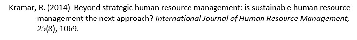 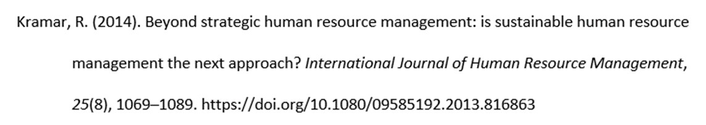 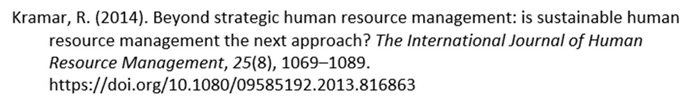As we can see from the samples above, all three applications did a very good job. Apart from some small issues (e.g., Endnote did not give the full page numbers; HTTP plus DOI is a little bit odd – the correct format is DOI only), basically the accuracy across all three applications was pretty good.
5.2.2 Sample 2 – Chapter of an e-book
In the test, the three applications were asked to generate bibliographic reference for a chapter of an e-book. Based on the APA publication manual, the resource is supposed to be coded to the following standard.
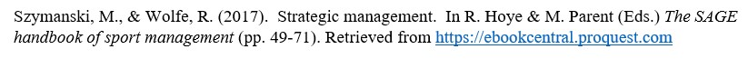However, the bibliographic reference generated by Endnote was totally wrong. (See below) Further investigation led to the discovery that it was the result of catalogue error.
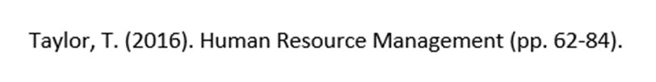Zotero was only able to generate the bibliographic reference for the entire e-book, but not a chapter as expected (see below):
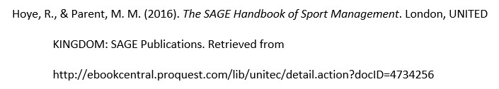Mendeley was able to generate a chapter, but also lots of mistakes (e.g., the editors’ names did not show up, the title of the book was wrong, etc.) See below:
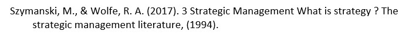5.2.3 Sample 3 – Book review
The three applications were also tested to generate a book review. The sample book review was written by Debi Saini who reviewed a book authored by Jayant Mukehejee. The title of Mukehejee’s book was Designing Human Resource Systems: A Leader’s Guide published by Sage Publications in New Delhi; Saini’s review was published on Vision 17 page 98 without a title. According to the APA publication manual, this resource is supposed to be coded to the following format:
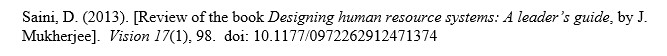Here is the list of bibliographic references generated by the three applications respectively.
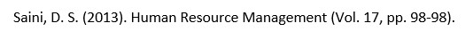 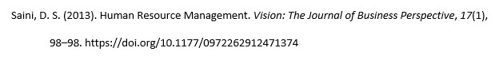 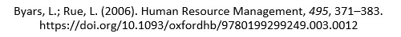A bibliographic reference is supposed to mirror the bibliographic information of the original source; therefore, it serves the purpose of facilitating a reader to find the original source and check its authority. All three applications created a so-called “title”, which they should not, because the original source does not have one.
Neither Endnote (the top one on the list) nor Zotero (the second one on the list) described the source as a book review. But at least, Zotero gave the journal title and DOI information. The bibliographic reference generated by Mendeley (the bottom one) was totally wrong. It was a mash-up of two totally non-related information resources. Further scrutiny of the metadata information under document properties did not help to find any valid clue.
5.2.4 Sample 4 – Dissertations and Theses
Unlike those examples above, Unitec students’ theses/dissertations were catalogued in-house. But the bibliographic references generated by the three application remain problematic. The sample thesis is supposed to be coded like this:
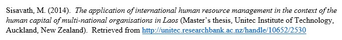The following was generated by Endnote. Obviously, “T. Unitec Institute of” was wrong. It was the outcome of Endnote’s technical limitation—a vital comma that distinguishes different parts of names. Two supervisor’s names were coded correctly, but their names should not be listed and they were not editors at all.
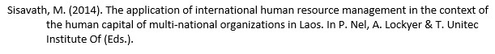The one generated by Zotero looks like a webpage and no part of it indicates that it was a student’s thesis.
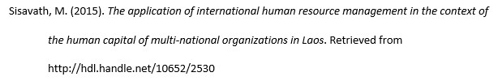The one generated by Mendeley is nowhere near a bibliographic reference.
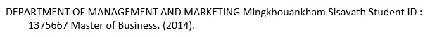5.3 Post-correction Accuracy Reassessment – Library Resources
As many of us know, all RMS applications allow a user to manipulate the metadata to correct any errors. This investigation also looked into the level of improvement after metadata was manually corrected. Here is a revisit of the sample e-book chapter.
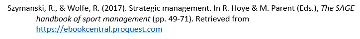 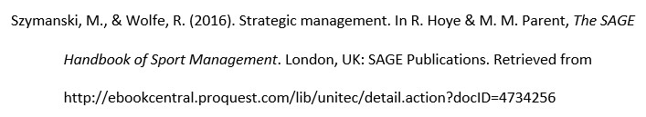 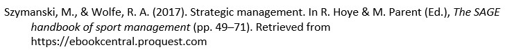As we can see from the list above, the accuracy level was significantly improved across all three applications, but some small issues persist. For example, Zotero did not mark Hoye and Parent as editors and there are no page numbers.
5.4 Accuracy Assessment - Free Online Resources
As stated in Section 5.1, there are three levels of automaticity. Zotero is the only application among the three that is capable of capturing metadata from all information resource formats without additional intervention. The following two were generated by Zotero regarding the sample free online encyclopedia.
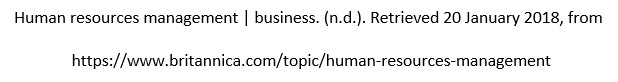 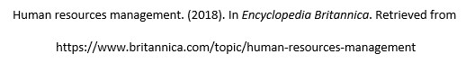The top one was generated by Zotero without additional intervention. It had some issues. For example, the title of the encyclopedia did not show up. The retrieval date is unnecessary because, unlike wikis, all entries of Encyclopedia Britannica were professionally written and they do not change often over time (APA, 2010, p. 192). The bottom one was generated after metadata was manually corrected, which is 100% compliant with the APA rule.
For free online resources, the only option for Endnote users is to manually add each resource into their personal library one by one. Although it provides some sort of automaticity, Mendeley is reliant on manually-coded metadata. The following two were generated by Endnote (the top one) and Mendeley (the bottom one). Even if the researcher chose the right format and carefully typed in each piece of metadata into the right field, the results remained problematic. Mendeley performed relatively better, but it still had issues. For example, the title of encyclopedia was not italicized and the word “in” before the title was missing.
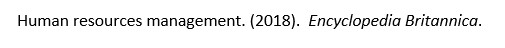 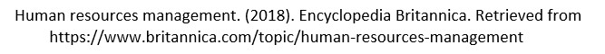5.5 User experience
Considering the seriousness of accuracy issues, the researcher conducted a small survey at Unitec to investigate the awareness of our students who are regular users of those RMS applications as well as their statics to deal with the accuracy problems.
Among the 38 randomly selected students, 30 of them (79%) said they did not know RMS applications. Provided that the trainings were only available to postgraduate students and staff, it was not a surprise to find that many of our students were not aware of the existence of those applications. In addition, two more participants said they had just heard of the application, but did not learn it and had no experience in using it.
After the researcher briefly explained the basic functions of RMS applications, the majority of participants who did not know those applications expressed their interest in learning one in the future. Fifteen out of 30 participants (50%) said they were interested or very interested and another 12 participants (40%) said maybe/possibly. Three expressed no interest. One was using the reference function provided by Microsoft Word. Another preferred managing the reference in her own way. The third said there was no time available to learn one. Generally speaking, students are interested in learning and using one of those applications. Should the institution have resources, the training should be open to all students.
Six out of 38 participants (16%) claimed they were using one of the three RMS applications. One was using Mendeley; the other five were using Endnote. The researcher believes there should be some in our institution who were Zotero users. However, considering the scale of this survey, no such people were surveyed. Two participants claimed the selection of the applications were their own choices; the remaining four claimed the applications were recommended by their lecturers or librarians. The researcher was also interested to know whether there were any students who had used one of the three applications before but ceased to use them because of accuracy issue or other reasons. However, no such person was found in the survey.
Overall, those who were using one of those RMS applications were satisfied with the product. One rated it excellent; four rated it good; and another one rated it neutral. One participant noticed the inaccuracy issue, but he did not know how to correct the metadata. Instead, he combined two approaches. If a bibliographic reference generated by Endnote was correct, he used it. If it was wrong, then he manually coded one. The remaining five participants did not carry out any accuracy checking. Rather, they inserted the bibliographic references generated by RMS applications directly into their assignments or research papers. One described the output as “perfect”. Furthermore, none of those participants mentioned that they were using those additional functions beyond generating bibliographic references.
Section 6: Discussion and Conclusion
To facilitate quantitative analysis, a marking system was developed by the researcher. Each bibliographic reference generated by a RMS application was given a mark depending on its level of accuracy. Ten (10) points were granted if the outcome was fully compliant with the rules set by the APA publication manual; zero (0) meant no part was correct.
Two figures below show the marks each bibliographic reference earned before (Figure 2) and after (Figure 3) their relevant metadata were manually corrected.
Figure 2: Pre-correction Accuracy Assessment

Figure 3: Post-correction Accuracy Reassessment
The overall quality of the bibliographic references generated by the three RMS applications was inconsistent, ranging from basically flawless to totally wrong, although each application does have its own strengths and weaknesses. Zotero has the best adaptability to formats and the accuracy is relatively consistent across all formats. The drag-and-drop feature makes Mendeley the most suitable for managing PDF documents, but its accuracy is not good enough. Reliance on the export function limits Endnote’s ability of dealing with non-library resources and the accuracy is least satisfactory, even if metadata were corrected.
As we can see from Figure 2, Zotero earned 73 points as the best among the three; Endnote and Mendeley merely got a passable grade. Please note that the actual performance of Endnote and Mendeley may be even worse. As discussed in Section 5.1, for those online resources, Endnote and Mendeley are not able to capture the metadata automatically. This means the points Endnote and Mendeley earned from encyclopedia, webpage and audio/video sources already contained intervention, which potentially enhanced the points they earned. Secondly, all three applications seemed to deal well with books and journals. This means a user may face fewer problems if most of the resources he or she uses are books or journals.
Accuracy is significantly improved after the metadata are manually corrected. However, no application earned 100 points, which means none of them are able to reach 100% accuracy or be fully compliant with the APA rules (please see Figure 3). The reasons include:
Firstly, one format is simply not available for a particular application. For example, Endnote does not have the book review option. So, the best possible option is to find a close match, which is a journal article in this case. Apparently, the accuracy has to be compromised. Here is the example:
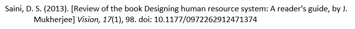The format that is fully compliant with APA style should be like the following. The title of the book to be reviewed should be italicized.
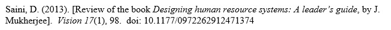Secondly, the application has design issues, which means even if both metadata and format are correct, the result still has issues. This requires application developers to fine tune their products. The example below was created by Mendeley. The correct APA format for webpage needs the title to be italicized.
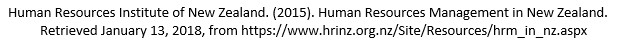Metadata are supposed to be surrogates of the original sources. However, metadata are far from accurate in many cases. Since RMS applications rely on metadata to generate bibliographic references, inaccuracy of metadata directly affect the outcome of bibliographic references generated by RMS applications.
Technical issues of RMS applications are another contributor, which further deteriorates the situation. Technical issues include (but are not limited to): a RMS application being unable to detect or misjudging the resource format; its limited capability in sorting out metadata from the original source; and design issues (e.g., failed to italicize a title).
Thus, improving the accuracy of the bibliographic references generated by RMS applications requires the joint efforts of metadata creators and RMS application developers. Librarians (or other instructors) at tertiary or research institutions play a role to introduce those applications to students and other users. Raising users’ awareness on these inaccuracy issues should be an integral part in the training. Finally, nothing can be replaced by individual users double-checking each bibliographic reference generated by a RMS application.
Section 7: Limitations and Future Research Directions
One limitation is the scale of this research. Apparently, sampling more keywords across a broader range of information resource formats may draw a more comprehensive picture of the issue. This research only investigated the performance of the three RMS applications up to 2018. As technology advances, the performance of these applications is likely to improve over time. It is meaningful to carry out further tests on these applications after a certain period of time. Furthermore, new applications are likely to be developed over time. A comparison among them could lead to some new and interesting findings.
Another limitation is this research mostly focused on the technical aspects. User experience was only briefly addressed. This research took the survey approach to investigate user experience. Considering the user pattern, the focus group approach sounds more suitable, and could be used for future research. One student claimed the outcome was “perfect”. Was that because the RMS application really did a great job or because the student was unable to discern the mistakes? Therefore, in future research, it would be helpful to ask students to provide a copy of the bibliographic references.
Reference
American Psychological Association. (2010). Publication manual of the American Psychological Association (6th ed.). Washington, DC: Author.
Butros, A., & Taylor, S. (2010). Managing information: Evaluating and selecting citation management software, a look at Endnote, RefWorks, Mendeley and Zotero. Woods Hole Scientific Community. Retrieved from https://darchive.mblwhoilibrary.org/bitstream/handle/1912/4595/Butros-Taylor_iamslic2010.pdf?sequence=1
Chawla, V., & Gupta, M. (2017). Reference management software: A study of Endnote, Mendeley, RefWorks, Zotero. Kaav International Journal of Science, Engineering & Technology 4(3), 8-12. Retrieved from http://www.kaavpublications.org/journals/journal-3/article/article-1315.pdf
Kratochvíl, J. (2016). Srovnání správnosti bibliografických citací vygenerovaných citačními manažery Citace PRO, EndNote, Mendeley, RefWorks a Zotero pro vybrané citační styly. [Comparison of the accuracy of bibliographic citations generated by citation managers PRO, EndNote, Mendeley, RefWorks, and Zotero for selected citation styles]. Proinflow: časopis pro informační vědy 8(2), 119-153. doi.:10.5817/proinflow.v8i2.1535
Kratochvíl, J. (2017). Comparison of the accuracy of bibliographical references generated for medical citation styles by EndNote, Mendeley, RefWorks and Zotero. The Journal of Academic Librarianship 43(1), 57-66. doi:10.1016/j.acalib.2016.09.001
Yamakawa, E., Kubota, F., Beuren, F., Scalvenzi, L., & Miguel, P. (2014). Comparativo dos softwares de gerenciamento de referências bibliográficas: Mendeley, EndNote e Zotero. [Comparison of bibliographic reference management software: Mendeley, EndNote and Zotero]. Transinformação 26(2). doi: 10.1590/0103-37862014000200006